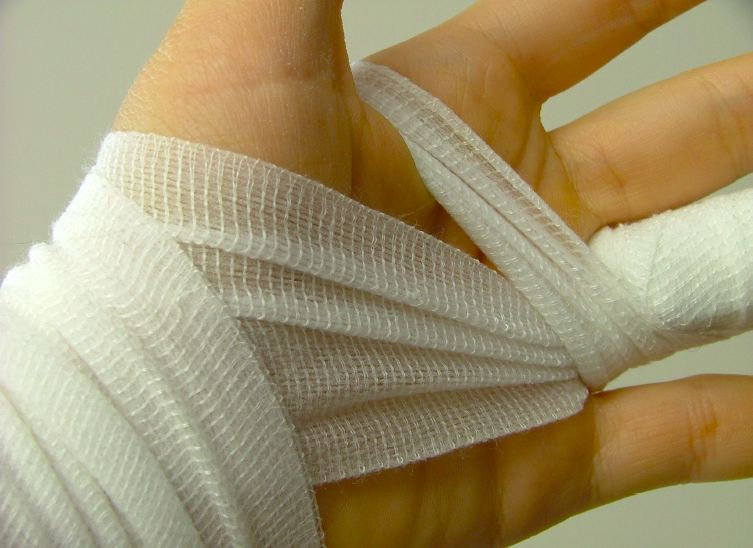

The Natural Band-Aid®
Using engineered collagen for wound treatment
Melody Pongmanopap
Fall 2005

Collagen, present in ligaments, tendons, bones, cartilage, and blood
vessel walls, is a vital component of the body’s connective tissue. Its
elasticity keeps our skin flexible, and its degradation over time
manifests itself through wrinkles. With the recent trend in medical
science towards using natural substances to reduce the occurrence of
undesirable side effects, it is unsurprising that collagen, which
constitutes 60 percent of the body’s total protein content, is the
target of many new approaches to medical treatment.
If collagen is modified with various peptides, it
can lead to the development of a more effective bandage, one which not
only fights infection, but also prevents the formation of scar tissue.
Michael Yu, PhD, at Johns Hopkins University has discovered a way to
transform collagen’s triple helix structure by simply mixing it with
smaller biological molecules.
In the Journal of the American Chemical Society, Yu
reported that instead of using the customary technique of applying
extreme heat to modify collagen, mixing it with small molecules called
collagen mimetic peptides proved to be much more compatible with the
human body. Scientists believe that since the peptides possess triple
helix structures, they can easily interact with collagen molecules,
giving it numerous additional properties.
Even by itself, collagen benefits the body by
attracting cells to seal a wound and form scar tissue. However, this
can be dangerous if the scar tissue interferes with peripheral nerve
regeneration, such as in blood vessels. Moreover, collagen can be
altered with a substance known as polyethylene glycol to make it
actually repel cells. Yu’s research team found that in a lab dish,
cells migrated towards the untreated collagen but shied away from the
modified kind. He believes that this modification can be used to
prevent scarring after certain injuries.
Research concerning the medical uses of collagen is
not entirely new. Scientists at Texas A&M University have also
found that collagen is an excellent treatment for wounds. Douglas
Miller, PhD, found that when poured or injected into open wounds,
collagen can decrease the time it takes for the wounds to heal by 50
percent. However, while it is easy to mold collagen to fit a given
wound, it does not bind directly to the site of injury in vivo.
Miller and other researchers solved this problem by
using a polymerization process to create a mixture of collagen and
other molecules that facilitates the direct binding of collagen to
wounds. The texture of the synthetic material is gelatinous and
flexible, but unlike gelatin itself, this newly-engineered collagen can
rise and fall according to a body’s movements without tearing.
Miller and other scientists believe that collagen
may have many other medical applications, including drug delivery.
Although research on collagen’s medical applications is still in its
nascent phase, this versatile protein provides the potential for a
plethora of medical advances.